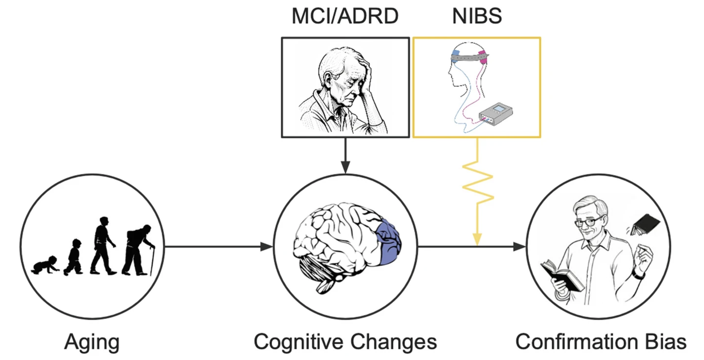
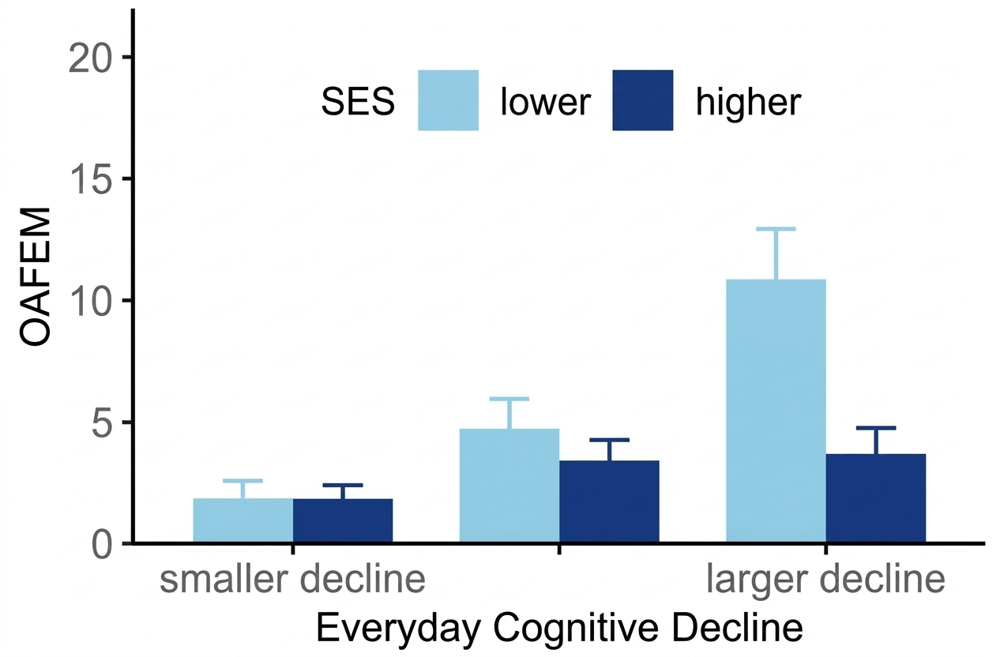
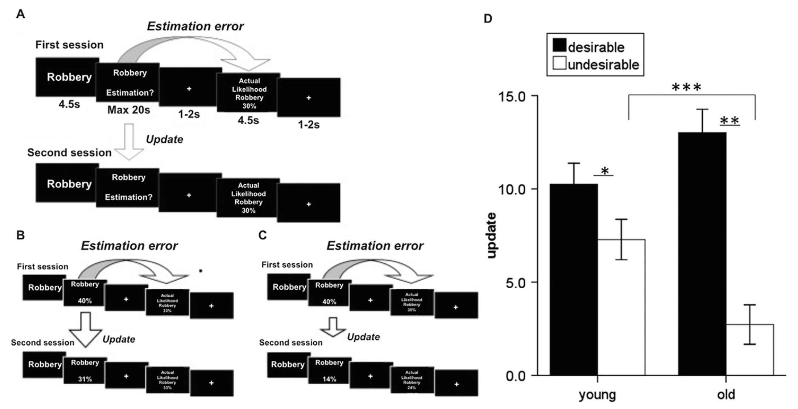
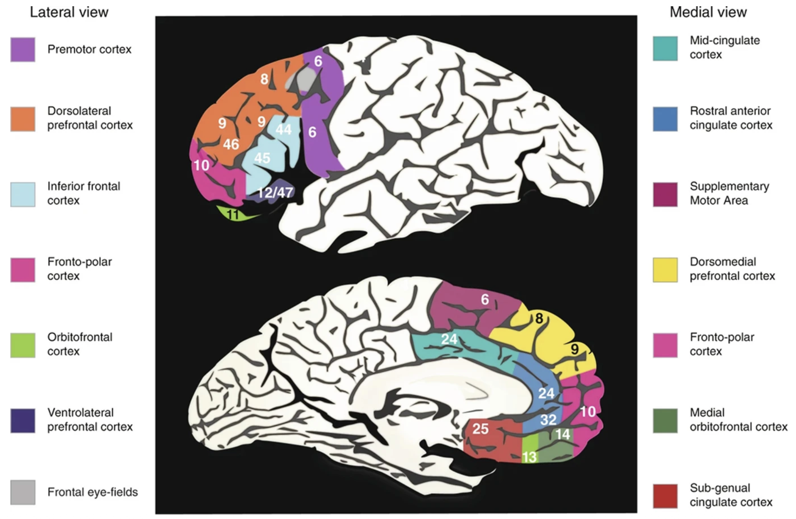

Maladaptive decision-making in older adults: Confirmation bias and financial exploitation
Abstract
Financial exploitation of older adults has become an increasingly urgent public health issue, with annual losses exceeding $10 billion in the United States. This exploitation often stems from age-related cognitive deficits, such as impairments in working memory and cognitive flexibility, which are linked to deterioration of the prefrontal cortex (PFC). A critical yet understudied component of age-related cognitive decline is confirmation bias—the tendency to interpret new information in a way that conforms to one’s preexisting beliefs. As older adults focus more on present-oriented goals related to social and emotional satisfaction, their ability to recognize and respond to exploitative situations may decrease. This problem worsens with the progression to mild cognitive impairment (MCI) and Alzheimer’s disease and related disorders, increasing vulnerability to fraud. Despite these links, little is known about how confirmation bias is associated with future cognitive decline and risk for fraud. Two main challenges impede progress: the lack of knowledge about the latent processes that shape confirmation bias in this population and the reliance on correlations between brain responses and behavior that do not clarify causal mechanisms. To address these issues, this chapter provides an overview of confirmation bias and its connection to aging. It then addresses adverse effects of confirmation bias before highlighting strengths of noninvasive brain stimulation as a method of investigating these relationships further.
Figures



